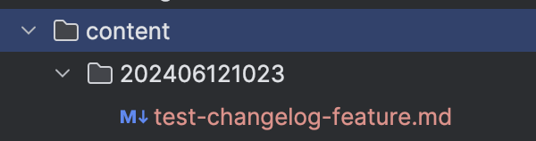

Media Tech Lab -
12.06.2024 10:23
- Implemented MTL changelog builder
- As Media Techlab Tech Fellow you can just make a PR with your progress updates in the /content folder.
- Use a timestamp and your project name as foldername.
- You can find all available project names at the top in generateChangelog.php